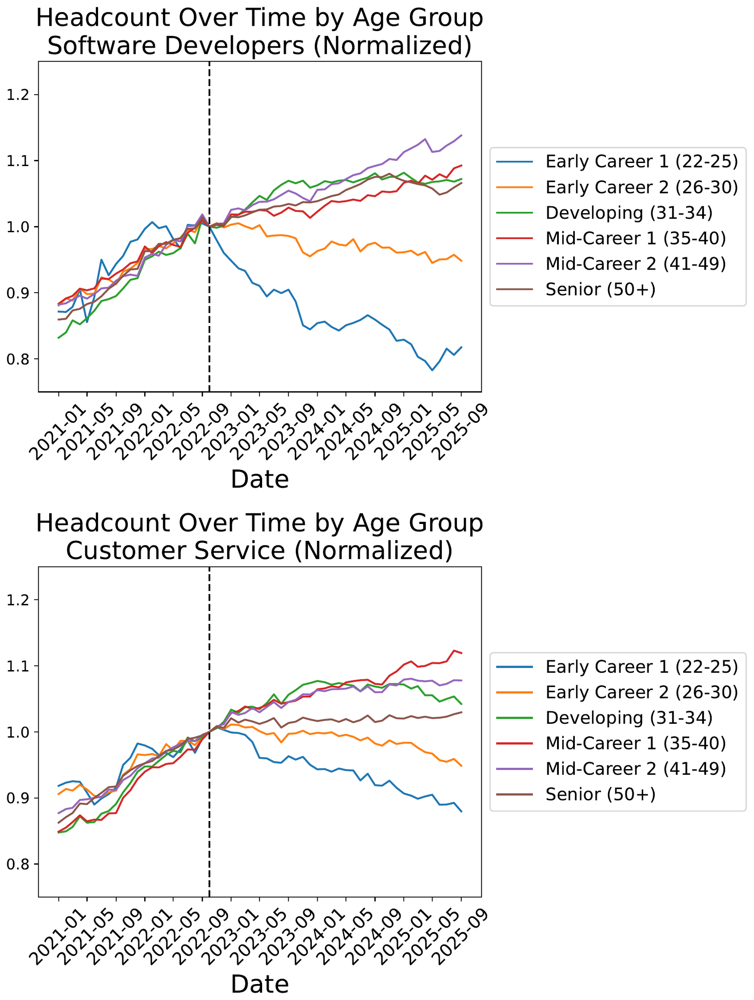
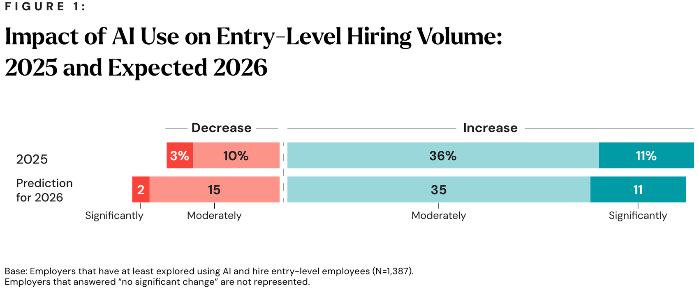
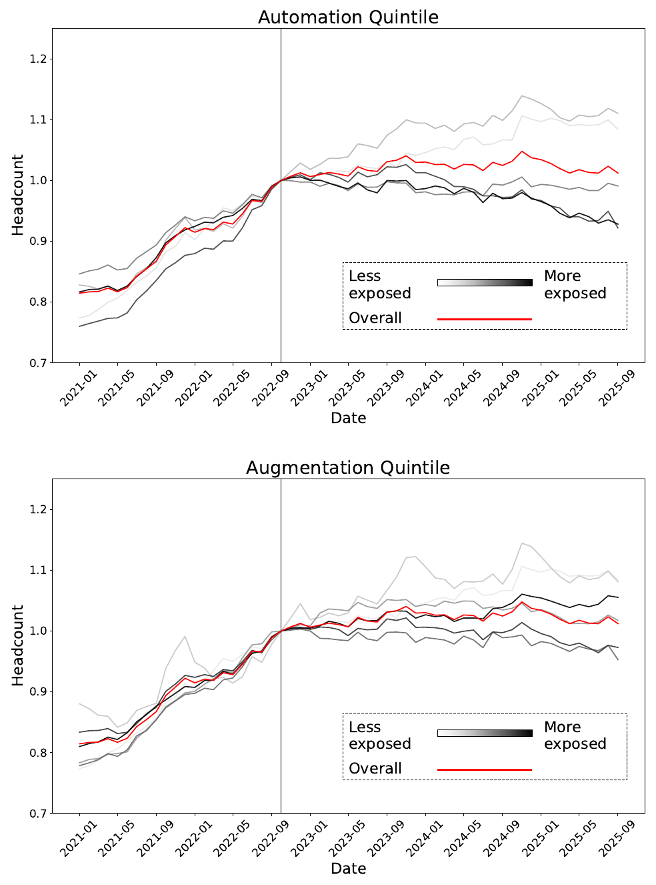
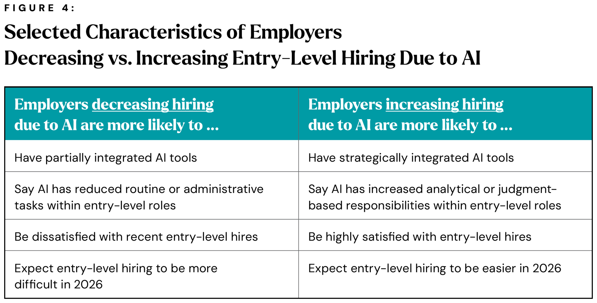
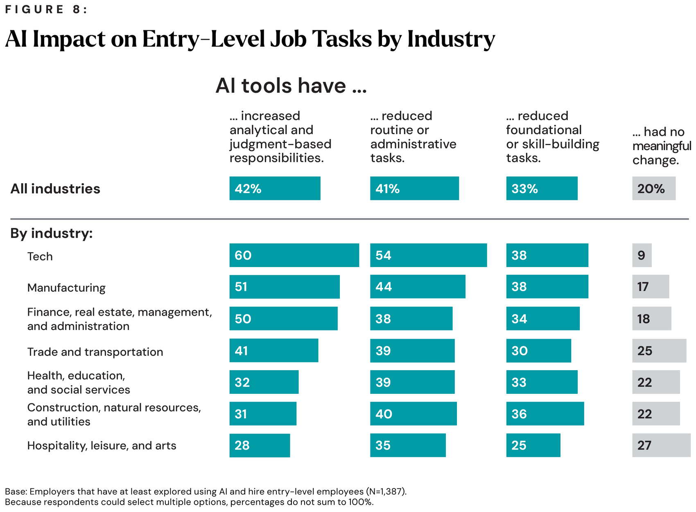
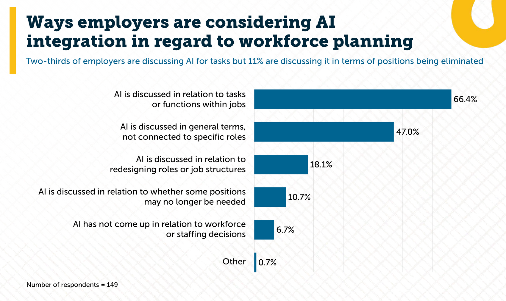
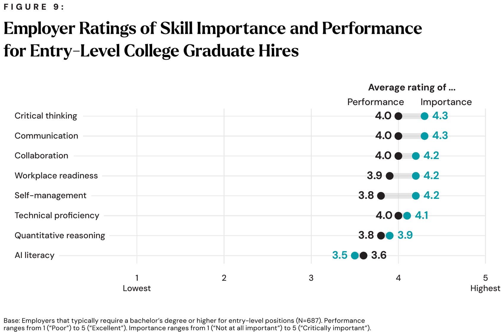
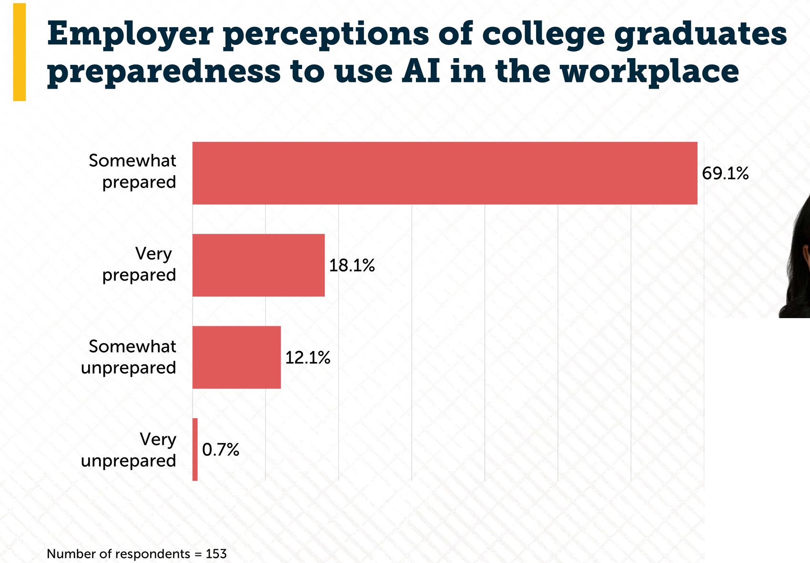

Global BBA · August–December 2026
Prof. Yuri
How the course works, and what each of us owes the other.
Three things, none of them a forecast.

ADP payroll records — millions of workers, monthly, through September 2025. Not a survey. In both occupations the 22–25 line falls after late 2022 while every older band rises.


Same payroll data, split by how people actually use Claude. Where use is automative, the most-exposed lines fall. Where it is augmentative, they do not — the top quintile is among the fastest-growing.


Analytical work up for 42%, routine work down for 41% — and 33% report foundational, skill-building tasks reduced. That third column is the one to worry about: it is how a junior learns the job.


Importance 3.5, below critical thinking and communication at 4.3. It is also the only skill where employers rate graduates' performance above its importance.

87% say graduates are prepared to use AI at work. “Very unprepared” is 0.7%.
The widely quoted “69% of employers say graduates are unprepared for AI” is this chart read backwards.